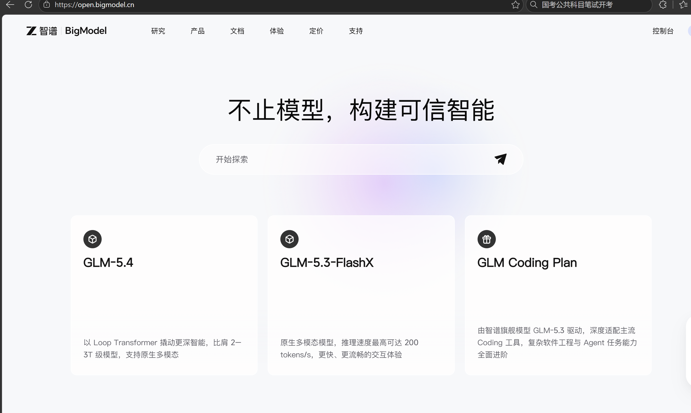
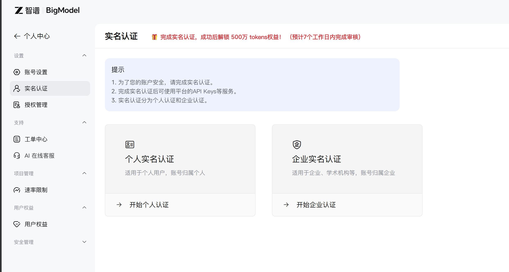
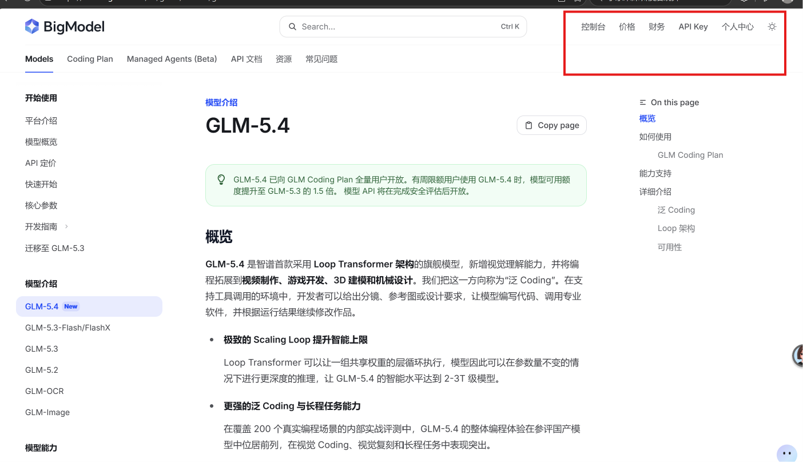
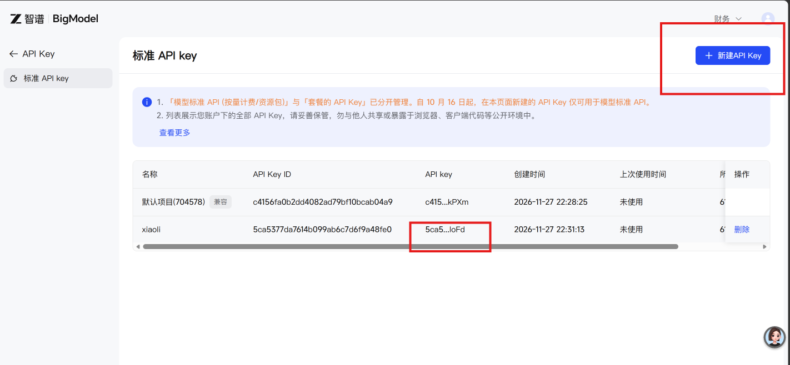

0
准备：连接智谱 AI
本页所有 AI 能力都通过本地 Node 服务转发到 智谱开放平台（BigModel），API Key 只保存在服务端
ai-note/.env 中，不会出现在浏览器代码里。启动服务后右上角状态灯会变为「已连接」。
第 1 步
打开智谱开放平台
https://open.bigmodel.cn/
- 注册并登录：使用手机号在 open.bigmodel.cn 注册智谱账号，登录后点击页面右上角「控制台」。
- 完成实名认证：控制台 → 个人中心 → 实名认证，选择「个人实名认证」提交身份信息。 实名通过后可解锁 500 万 tokens 权益（官方提示审核约 7 个工作日），未实名时调用接口可能被拒绝。
- 创建 API Key：控制台顶部导航点击「API Key」→ 右上角「+ 新建 API Key」→
填写名称（如 xiaoli）→ 创建后点「复制」，得到形如
xxxxxxxx.xxxxxxxx的完整密钥（只显示一次，请立即保存）。 - 本地配置：把 Key 写入
ai-note/.env的ZHIPU_API_KEY，再重启node server.js，右上角状态灯变绿即接入成功。
安全提醒：API Key 等同于账号密码，只能放在服务端
.env 里，不要写进 HTML/JS、
不要截图外传、不要提交到 Git 仓库（本项目已用 .gitignore 排除）。
真实操作截图（智谱平台）




cd ai-note node server.js # 默认 http://localhost:8312
ZHIPU_API_KEY=你的Key ZHIPU_BASE_URL=https://open.bigmodel.cn/api/paas/v4 ZHIPU_MODEL=glm-4.7-flash
提示：如果状态显示「未连接」，说明服务没启动或端口被占用；先运行上面的命令，再点右侧按钮刷新状态。
1
笔记整理：长文本 → 结构化要点
把课堂上记的零散文字（或课本段落）粘进来，AI 会提炼一句话总结、核心要点、公式/定义、以及值得追问的问题， 生成结果可以一键存进「复习清单」。
建议 100～3000 字
AI 整理结果
整理结果会显示在这里
2
错题积累：把每一道错题变成资产
录入题目、你的答案和正确答案，AI 会判断错因类型（概念不清 / 计算失误 / 审题偏差 / 方法不会）， 并给出对应知识点与改进行动。保存后自动进入下方错题本。
AI 错因诊断
错题 0 道
诊断结果会显示在这里
我的错题本
3
答案解析：从「做错」到「讲得清」
选择一道错题，AI 会输出考点定位、错因剖析、完整解题步骤、同类题变式四部分， 把这道题彻底吃透；解析会一并保存到错题卡里。
选择错题后，这里显示题目与你的答案
AI 解析已自动保存到该错题
解析结果会显示在这里
4
复习清单：考前只看这一页
所有整理过的笔记、带解析的错题都汇总在这里，支持搜索、勾选「已掌握」以及导出为 Markdown 文件。
✓